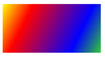
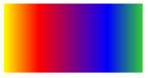
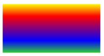

Практическое руководство. Закраска области с линейным градиентом
В этом примере показано, как использовать LinearGradientBrush класс для закраски области с линейным градиентом. В следующем примере Fill из Rectangle отрисовывается с диагонального линейного градиента, которая переходит с желтого красного, синего и зеленого.
Пример
<!-- This rectangle is painted with a diagonal linear gradient. -->
<Rectangle Width="200" Height="100">
<Rectangle.Fill>
<LinearGradientBrush StartPoint="0,0" EndPoint="1,1">
<GradientStop Color="Yellow" Offset="0.0" />
<GradientStop Color="Red" Offset="0.25" />
<GradientStop Color="Blue" Offset="0.75" />
<GradientStop Color="LimeGreen" Offset="1.0" />
</LinearGradientBrush>
</Rectangle.Fill>
</Rectangle>
Rectangle diagonalFillRectangle = new Rectangle();
diagonalFillRectangle.Width = 200;
diagonalFillRectangle.Height = 100;
// Create a diagonal linear gradient with four stops.
LinearGradientBrush myLinearGradientBrush =
new LinearGradientBrush();
myLinearGradientBrush.StartPoint = new Point(0,0);
myLinearGradientBrush.EndPoint = new Point(1,1);
myLinearGradientBrush.GradientStops.Add(
new GradientStop(Colors.Yellow, 0.0));
myLinearGradientBrush.GradientStops.Add(
new GradientStop(Colors.Red, 0.25));
myLinearGradientBrush.GradientStops.Add(
new GradientStop(Colors.Blue, 0.75));
myLinearGradientBrush.GradientStops.Add(
new GradientStop(Colors.LimeGreen, 1.0));
// Use the brush to paint the rectangle.
diagonalFillRectangle.Fill = myLinearGradientBrush;
На следующем рисунке показан градиент, созданный в предыдущем примере.

Чтобы создать горизонтальный линейный градиент, измените StartPoint и EndPoint из LinearGradientBrush к (0,0.5) и (1,0.5). В следующем примере Rectangle отрисовывается с горизонтального линейного градиента.
<!-- This rectangle is painted with a horizontal linear gradient. -->
<Rectangle Width="200" Height="100">
<Rectangle.Fill>
<LinearGradientBrush StartPoint="0,0.5" EndPoint="1,0.5">
<GradientStop Color="Yellow" Offset="0.0" />
<GradientStop Color="Red" Offset="0.25" />
<GradientStop Color="Blue" Offset="0.75" />
<GradientStop Color="LimeGreen" Offset="1.0" />
</LinearGradientBrush>
</Rectangle.Fill>
</Rectangle>
Rectangle horizontalFillRectangle = new Rectangle();
horizontalFillRectangle.Width = 200;
horizontalFillRectangle.Height = 100;
// Create a horizontal linear gradient with four stops.
LinearGradientBrush myHorizontalGradient =
new LinearGradientBrush();
myHorizontalGradient.StartPoint = new Point(0,0.5);
myHorizontalGradient.EndPoint = new Point(1,0.5);
myHorizontalGradient.GradientStops.Add(
new GradientStop(Colors.Yellow, 0.0));
myHorizontalGradient.GradientStops.Add(
new GradientStop(Colors.Red, 0.25));
myHorizontalGradient.GradientStops.Add(
new GradientStop(Colors.Blue, 0.75));
myHorizontalGradient.GradientStops.Add(
new GradientStop(Colors.LimeGreen, 1.0));
// Use the brush to paint the rectangle.
horizontalFillRectangle.Fill = myHorizontalGradient;
На следующем рисунке показан градиент, созданный в предыдущем примере.

Чтобы создать Вертикальный линейный градиент, измените StartPoint и EndPoint из LinearGradientBrush на (0.5,0) и (0.5,1). В следующем примере Rectangle окрашен Вертикальный линейный градиент.
<!-- This rectangle is painted with a vertical gradient. -->
<Rectangle Width="200" Height="100">
<Rectangle.Fill>
<LinearGradientBrush StartPoint="0.5,0" EndPoint="0.5,1">
<GradientStop Color="Yellow" Offset="0.0" />
<GradientStop Color="Red" Offset="0.25" />
<GradientStop Color="Blue" Offset="0.75" />
<GradientStop Color="LimeGreen" Offset="1.0" />
</LinearGradientBrush>
</Rectangle.Fill>
</Rectangle>
Rectangle verticalFillRectangle = new Rectangle();
verticalFillRectangle.Width = 200;
verticalFillRectangle.Height = 100;
// Create a vertical linear gradient with four stops.
LinearGradientBrush myVerticalGradient =
new LinearGradientBrush();
myVerticalGradient.StartPoint = new Point(0.5,0);
myVerticalGradient.EndPoint = new Point(0.5,1);
myVerticalGradient.GradientStops.Add(
new GradientStop(Colors.Yellow, 0.0));
myVerticalGradient.GradientStops.Add(
new GradientStop(Colors.Red, 0.25));
myVerticalGradient.GradientStops.Add(
new GradientStop(Colors.Blue, 0.75));
myVerticalGradient.GradientStops.Add(
new GradientStop(Colors.LimeGreen, 1.0));
// Use the brush to paint the rectangle.
verticalFillRectangle.Fill = myVerticalGradient;
На следующем рисунке показан градиент, созданный в предыдущем примере.

Note
В примерах этого раздела используется система координат по умолчанию для определения начальной и конечной точек. Система координат по умолчанию определяется относительно ограничивающего прямоугольника: 0 указывает 0 процентов ограничивающего прямоугольника, а 1 указывает 100 процентов ограничивающего прямоугольника. Эту систему координат можно изменить, задав MappingMode в соответствии с значением BrushMappingMode.Absolute. Абсолютная система координат не привязана к ограничивающему прямоугольнику. Значения интерпретируются непосредственно в локальной области.
Дополнительные примеры см. в разделе пример использования кистей. Дополнительные сведения о градиенты и других типов кистей см. в разделе закраске сплошным цветом и градиентом Обзор.